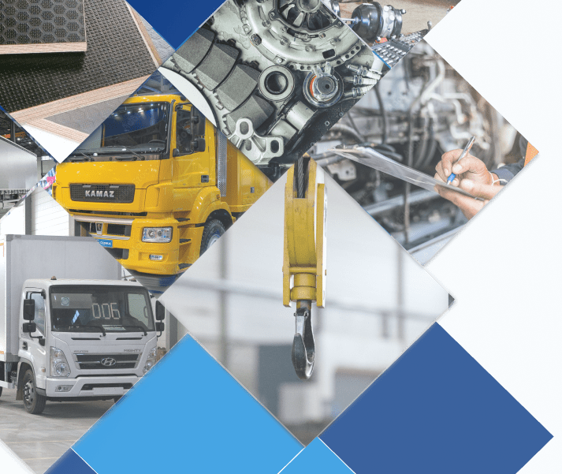
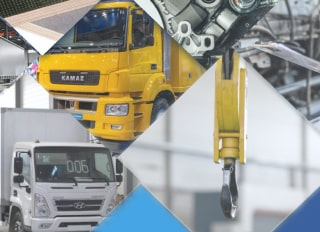
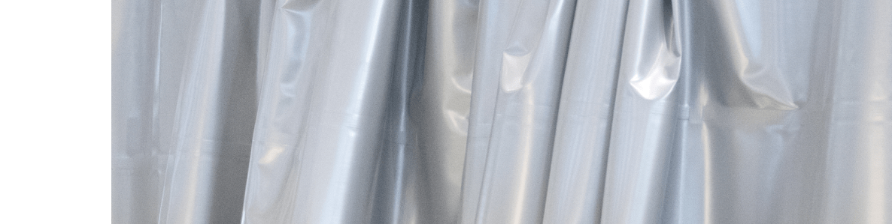
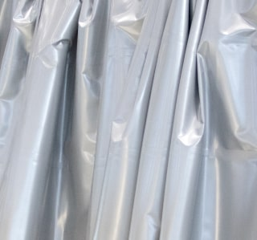
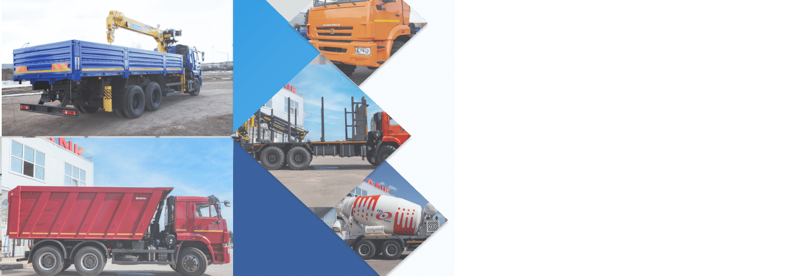
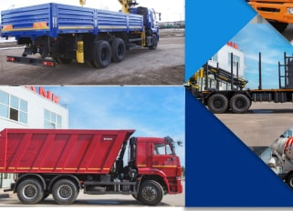

Ремонт тентов и надстроек
01 Выгодные конкурентные преимущества
Квалифицированный персонал выполнит весь спектр ремонтных работ:
- Диагностика
- Технический осмотр
- Гарантийное и постгарантийное обслуживание
- Периодическое техническое обслуживание
- Слесарные работы
- Малярно-кузовной ремонт
- Выездная диагностика и ремонт
- Установка дополнительного оборудования
Мы обслуживаем и ремонтируем весь модельный ряд грузового коммерческого транспорта марок Mercedes-Benz, Kamaz, Hyundai, Fuso, Jac, а также строительной техники производителей UMG и XCMG. Техническая оснащенность сервиса, квалификация рабочих, а также применение оригинальных запчастей и расходных материалов гарантируют безупречное качество производимых работ.

02 Почему выбирают нас?
Компания «Техцентры Сотранс» производит ремонт грузовых автомобилей Mercedes-Benz, Kamaz, Hyundai, Fuso, Jac различных моделей, а также спецтехники производителей UMG и XCMG.
- Все работы осуществляются квалифицированными специалистами с большим опытом работы
- Технический персонал постоянно проходит обучение в учебных центрах дистрибьютора, повышая профессиональный уровень
- Отличная техническая база, профессиональная подготовка, оснащенность сервисного центра всем необходимым оборудованием и специнструментом позволяет проводить качественные ремонтные работы в самые сжатые сроки.
- Высокое качество работ по ремонту автомобилей обусловлено строгим соблюдением стандартов производителей.

03 Ремонт тентов
- Аварийные автомобили
- Порезы, протертости
- Любые течи по всей площади тентовых конструкций

03 Ремонт надстроек
- Шасси
- Седельный тягач
- Бортовой тентованный
- Фурон рефрижераторный
- Цистерна
- Контейнеровоз
- Кран-манипулятор
- Самосвальный кузов
- Автобетоносмеситель
- Автогидроподъемник
- Автобус